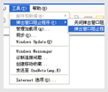
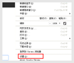
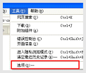

IE浏览器设置
在IE6、IE7中，在顶部菜单工具中可以看到“弹出窗口阻止程序”，点击“弹出窗口阻止程序设置”,加入访问地址

Google浏览器设置
点击后选择“设置”,在设置页面我们点击“高级设置”按钮,继续点击“内容设置”,点击“管理例外情况”,加入访问地址

Firefox浏览器设置
设置页面在“内容”标签中可以看到阻止弹出窗口的选项是选中，点击的例外，访问地址加入后就不会再有弹出窗口提示